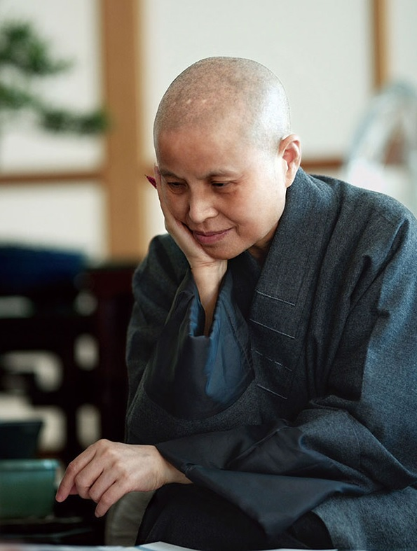
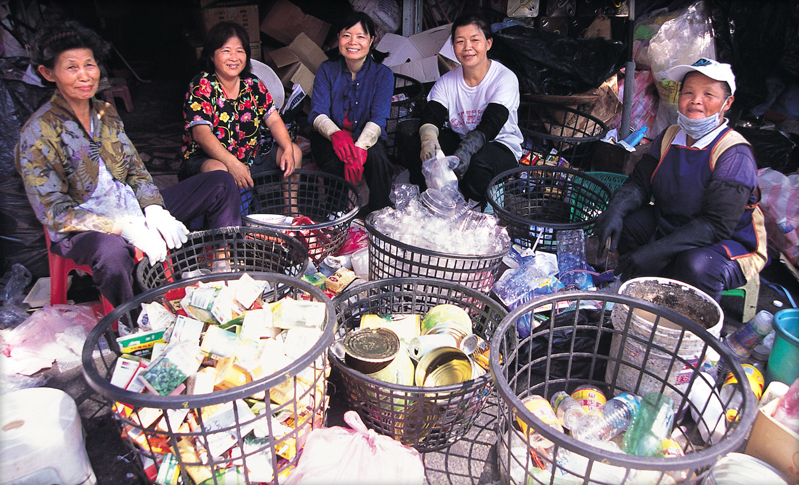
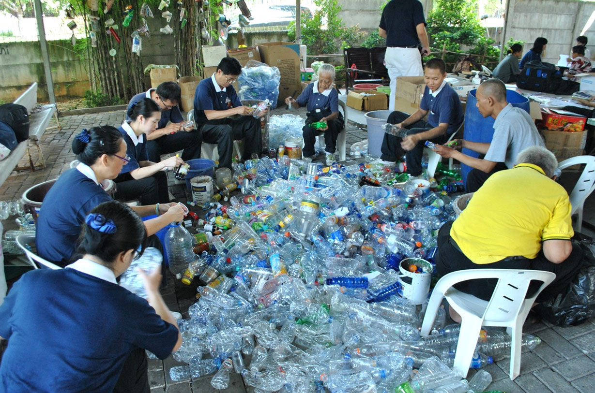

Tzu chi merupakan sebuah organisasi nirlaba yang telah didirikan oleh master cheng yen selain itu master cheng yen juga menyelenggarakah sebuah sekolah yang dinamakan "sekolah cinta kasih Tzu Chi" .

dulunya pada tahun 1990
master cheng yen
pernah memberikan ceramah di taiwan dimana ia memberikan sebuah ide untuk ‘menggunakan tangan yang mereka pakai untuk bertepuk tangan untuk menjaga lingkungan’
dan kemudian terdapat seorang perempuan yang langsung mulai untuk memimpin kegiatan daur ulang areanya, berkat ini dan dedikasi relawan - relawan kegiatan
Tzu Chi
yang berlangsung selama bertahun - tahun kegiatan
mendaur ulang dengan tangan ini pun dapat tersebar ke berbagai daerah dan negara - negara lain.


organisasi
Tzu chi
telah membangun depo pelestarian lingkungan di berbagai tempat - tempat salah satunya terdapat di dekat
sekolah cinta kasih Tzu Chi
Cengkareng, depo ini tidak hanya digunakan oleh para relawan untuk menyimpan
sampah yang dapat di daur ulang tetapi juga digunakan sebagai tempat untuk sosialisasi relawan baru, tempat dimana siswa - siswa dapat belajar tentang daur ulang
seperti teorinya dan disana mereka juga bahkan dapat mengpraktikanya.